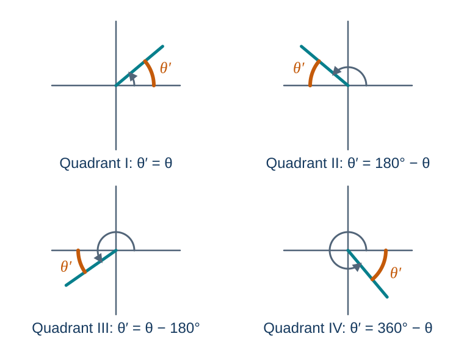
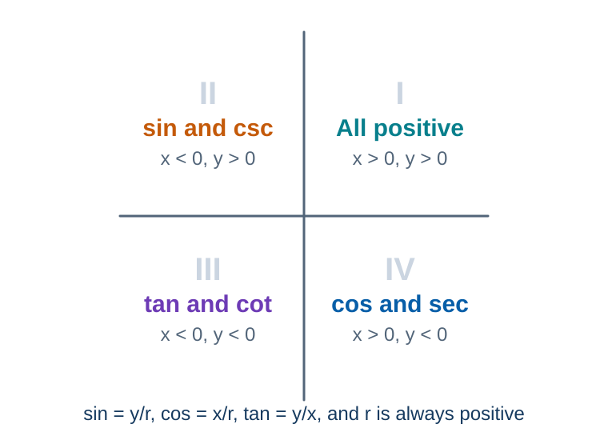
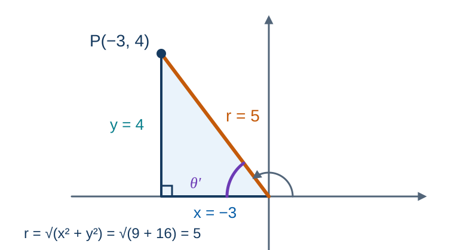

MATH 130 · Unit 3B
Trigonometric Functions of Any Angle
Concepts, worked examples, student practice, and synthesis
55 minutes · Offline capable
Today’s Learning Roadmap
- 1
find reference angles in degrees and radians
- 2
determine trigonometric signs and quadrants
- 3
find exact trigonometric values from points and reference angles, and solve sine and cosine equations
- 4
apply the trigonometric triangle-area formula
Activate · 0.5 minSource: 1
Predict: find reference angles in degrees and radians
Why is a reference angle always acute?
Commit to a response before discussion.
Activate · 1.0 minSource: Authored
find reference angles in degrees and radians
- Reference angles are measured to the nearest x-axis.
- First find a coterminal angle when the original lies outside one rotation.

Explain · 2.5 minSource: 2, 3
Model the Skill: find reference angles in degrees and radians
$150^\circ$ has reference angle $30^\circ$; $310^\circ$ has $50^\circ$.
$-120^\circ$ is coterminal with $240^\circ$, so its reference angle is $60^\circ$.
$7\pi/4$ has reference angle $\pi/4$.
Model · 3.0 minSource: 5
You Try: find reference angles in degrees and radians
Find the reference angle for 580°.
$580-360=220^\circ$, so the QIII reference angle is 40°.
Practice · 3.0 minSource: 6, 7
Check and Diagnose: find reference angles in degrees and radians
- Do not measure to the y-axis.
- Use π, not 180°, when working in radians.
What evidence confirms the setup, sign, unit, or magnitude?
Feedback · 2.0 minSource: 8
Make It Stick: find reference angles in degrees and radians
State the quadrant formulas for reference angles.
Answer in complete mathematical sentences and identify one remaining question.
Synthesize · 0.5 minSource: 9
Predict: determine trigonometric signs and quadrants
If tangent is positive and cosine is negative, which quadrant is possible?
Commit to a response before discussion.
Activate · 1.0 minSource: Authored
determine trigonometric signs and quadrants
ASTC summarizes positive functions by quadrant.
Signs follow from x, y, and positive r.

Explain · 2.5 minSource: 10
Model the Skill: determine trigonometric signs and quadrants
Determine the quadrant if $\tan\theta>0$ and $\cos\theta<0$.
- Tangent is positive in Quadrants I and III.
- Cosine is negative in Quadrants II and III.
- The intersection is Quadrant III.
Model · 3.0 minSource: Authored
You Try: determine trigonometric signs and quadrants
Determine the quadrant if $\sin\theta>0$ and $\sec\theta<0$.
Quadrant II.
Practice · 3.0 minSource: 11
Check and Diagnose: determine trigonometric signs and quadrants
Use the intersection of sign conditions.
Reciprocal functions share the sign of their partner.
Feedback · 2.0 minSource: Authored
Make It Stick: determine trigonometric signs and quadrants
Explain ASTC using the signs of x and y rather than memorization.
Answer in complete mathematical sentences and identify one remaining question.
Synthesize · 0.5 minSource: Authored
Predict: find exact trigonometric values from points and reference angles
What does r represent for a point $(x,y)$ on a terminal side?
Commit to a response before discussion.
Activate · 1.0 minSource: Authored
find exact trigonometric values from points and reference angles
- $r=\sqrt{x^2+y^2}$.
- Use the reference angle for magnitude and the quadrant for sign.
Explain · 2.5 minSource: 4, 12
Model the Skill: find exact trigonometric values from points and reference angles
For $P=(-3,4)$, calculate r and all six trigonometric values.
- $r=\sqrt{(-3)^2+4^2}=5$.
- $\sin\theta=4/5$, $\cos\theta=-3/5$, $\tan\theta=-4/3$.
- $\csc\theta=5/4$, $\sec\theta=-5/3$, $\cot\theta=-3/4$.

Model · 3.0 minSource: 13
You Try: find exact trigonometric values from points and reference angles
Find exact trig values for $P=(-2,-5)$ and evaluate $\sin240^\circ$.
- For $P=(-2,-5)$, $r=\sqrt{29}$; $\sin=-5/\sqrt{29}$, $\cos=-2/\sqrt{29}$, $\tan=5/2$.
- $\csc=-\sqrt{29}/5$, $\sec=-\sqrt{29}/2$, $\cot=2/5$; $\sin240^\circ=-\sqrt3/2$.
Practice · 3.0 minSource: 14, 15
Model the Skill: solve a sine or cosine equation
Find all $\theta$ in $[0^\circ,360^\circ)$ with $\sin\theta=-\tfrac{\sqrt2}{2}$.
- Reference angle: $\sin\theta'=\tfrac{\sqrt2}{2}$ gives $\theta'=45^\circ$.
- Sine is negative in Quadrants III and IV.
- $\theta=180^\circ+45^\circ=225^\circ$ and $\theta=360^\circ-45^\circ=315^\circ$.

Model · 3.0 minSource: Authored
You Try: solve a cosine equation
Find all $\theta$ in $[0^\circ,360^\circ)$ with $\cos\theta=-\tfrac{\sqrt2}{2}$.
Reference angle $45^\circ$; cosine is negative in Quadrants II and III, so $\theta=135^\circ$ and $\theta=225^\circ$.
Practice · 2.0 minSource: Authored
Check and Diagnose: find exact trigonometric values from points and reference angles
- r is always positive.
- Rationalize denominators only when required by course convention.
- An equation like $\sin\theta=k$ has two answers on one rotation; find both.
What evidence confirms the setup, sign, unit, or magnitude?
Feedback · 2.0 minSource: 16
Make It Stick: find exact trigonometric values from points and reference angles
Describe the point-to-ratios workflow in three steps.
Answer in complete mathematical sentences and identify one remaining question.
Synthesize · 0.5 minSource: 17
Predict: apply the trigonometric triangle-area formula
Why must the known angle be included between the two known sides?
Commit to a response before discussion.
Activate · 1.0 minSource: Authored
apply the trigonometric triangle-area formula
- $A=\tfrac12bc\sin A$ uses two sides and their included angle.
- The formula applies to nonright triangles.
Explain · 2.5 minSource: 18
Model the Skill: apply the trigonometric triangle-area formula
Find the area when $A=76^\circ$, $b=34$, and $c=21$.
- $A_{triangle}=\tfrac12bc\sin A$.
- $A_{triangle}=\tfrac12(34)(21)\sin76^\circ\approx346.40$.
- The result is in square units.
Model · 3.0 minSource: 19
You Try: apply the trigonometric triangle-area formula
Find the area when sides 12 and 15 include a 40° angle.
$A=\tfrac12(12)(15)\sin40^\circ\approx57.85$.
Practice · 3.0 minSource: Authored
Check and Diagnose: apply the trigonometric triangle-area formula
- Match each side pair with its included angle.
- Square units are required.
What evidence confirms the setup, sign, unit, or magnitude?
Feedback · 2.0 minSource: 20
Make It Stick: apply the trigonometric triangle-area formula
Explain how the diagram identifies the correct sine angle.
Answer in complete mathematical sentences and identify one remaining question.
Synthesize · 0.5 minSource: Authored
Session Summary and Exit Ticket
- State the most important idea from today without looking at your notes.
- Complete one representative setup and identify the step most likely to cause an error.
- Write one question that should be answered before the next assessment.
Answer in complete mathematical sentences and identify one remaining question.
Use the objective roadmap to identify any skill that still needs deliberate practice.
Synthesize · 1.5 minSource: 21